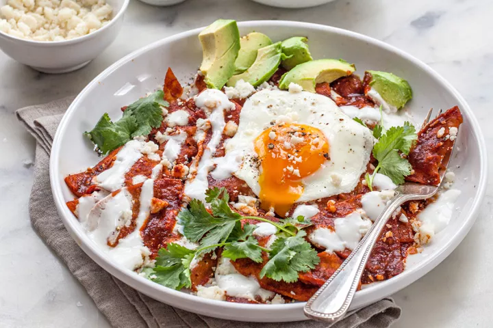

This delicious Latin dish is far too easy to make, for how tasty it is! chilaquiles can be prepared with a red, tomato-based, sauce, or with a green, tomatillo-based sauce. Various levels of heat can be achieved by incorporating other flavorful and spicy peppers. In the style of the Mexican state of Jalisco, these chilaquiles can be topped with cotija cheese, sour cream, and onion (among other things)
Inspired by this recipe